PHIND RNA-seq
nf-core/rna-seq
I used the nf-core/rna-seq pipeline (v3.14.0) to analyse RNA-sequencing data.
I used GRCh38 as the reference genome. The QC is reasonable.
The pipeline parameters were relatively vanilla. In a larger analysis, there would be a little more optimisation to do.
Transcript abundance to count matrices
I used the Bioconductor package tximport in R version 4.3.1 to summarise transcript-level estimates (salmon files) into a count matrix. Counts are length scaled transcripts per million (nTPM).
Script - 01_tximport_DESeq2.R
Outlier detection and filtering
I filtered all genes with ≤10 normalised TPM.
At this step, I also filtered some genes which are related to U2 and are massively over expressed across the board. These were:
- ENSG00000275616
- ENSG00000274062
- ENSG00000275219
- ENSG00000274862
I performed Generalised PCA on the count matrix, with the package glmpca. I identified samples which were more than 2.5 SD from the mean in either (or both) of the first 2 PCs and removed them.
- GCTU_PN0047
- GCTU_PN0052
Script - 02_outliers.R
I then re-imported the salmon files.
Script - 03_tximport_DESeq2_filtered.R
Differential expression
I used DESeq2 to perform differential expression analysis, based on subphenotype. I used the ‘il6_stnfr1_hco3_poc_alloc’ metadata column to assign samples to a subphenotype. Where this value was missing, I imputed it based on the ‘il6_stnfr1_hco3_elisa_alloc’ column. For sample GCTU_PN0090, I assumed the patient to be hypoinflammatory.
Script - 04_DE.R
At an adjusted P value threshold <0.1, for hyperinflammatory vs. hypoinflammatory, there were:
- 130 (0.47%) up-regulated genes (LFC >0)
- 438 (1.6%) down-regulated genes (LFC <0)
Applying a log2 fold change threshold of > 1.2 or < -1.2, there were:
- 37 up-regulated genes
- 104 down-regulated genes
Up-regulated genes (adj P <0.1 and abs(Log2FC) > 1.2)
Click to expand
| Gene | Ensembl ID | Log2 FC | adj P value |
|---|---|---|---|
| SPRY2 | ENSG00000136158 | 2.00 | 0.0034 |
| MS4A4A | ENSG00000110079 | 1.77 | 0.0037 |
| CTSL | ENSG00000135047 | 1.32 | 0.0041 |
| IGHV3-11 | ENSG00000211941 | 2.42 | 0.0056 |
| MCAM | ENSG00000076706 | 3.67 | 0.0074 |
| RASGEF1B | ENSG00000138670 | 1.21 | 0.0077 |
| DNM1 | ENSG00000106976 | 1.43 | 0.0126 |
| PCSK9 | ENSG00000169174 | 2.99 | 0.0189 |
| ADCY6 | ENSG00000174233 | 1.57 | 0.0257 |
| SEMA6B | ENSG00000167680 | 1.39 | 0.0327 |
| C1QB | ENSG00000173369 | 1.77 | 0.0327 |
| TNIP3 | ENSG00000050730 | 1.70 | 0.0334 |
| ROM1 | ENSG00000149489 | 1.27 | 0.0334 |
| EMP1 | ENSG00000134531 | 1.53 | 0.0380 |
| B4GALT2 | ENSG00000117411 | 1.35 | 0.0385 |
| SPRY1 | ENSG00000164056 | 2.09 | 0.0408 |
| IL31RA | ENSG00000164509 | 1.60 | 0.0511 |
| RBPMS | ENSG00000157110 | 2.90 | 0.0517 |
| IGHV7-4-1 | ENSG00000282122 | 3.42 | 0.0529 |
| C1QC | ENSG00000159189 | 1.96 | 0.0536 |
| IGHV5-51 | ENSG00000211966 | 1.64 | 0.0546 |
| C1QA | ENSG00000173372 | 1.71 | 0.0581 |
| LOC100129844 | ENSG00000218565 | 1.76 | 0.0604 |
| RAB38 | ENSG00000123892 | 1.28 | 0.0622 |
| CKAP2L | ENSG00000169607 | 1.25 | 0.0633 |
| CAVIN1 | ENSG00000177469 | 1.25 | 0.0676 |
| FAM20A | ENSG00000108950 | 1.28 | 0.0695 |
| Uncategorised | ENSG00000279319 | 1.22 | 0.0699 |
| AS to AKAP8 | ENSG00000268189 | 1.41 | 0.0738 |
| SLCO4A1 | ENSG00000101187 | 1.57 | 0.0776 |
| APOBEC3H | ENSG00000100298 | 1.38 | 0.0782 |
| SYNC | ENSG00000162520 | 1.63 | 0.0788 |
| EGR3 | ENSG00000179388 | 1.51 | 0.0788 |
| LDHAP4 | ENSG00000214110 | 1.52 | 0.0792 |
| COL4A4 | ENSG00000081052 | 1.54 | 0.0908 |
| KIF20A | ENSG00000112984 | 1.60 | 0.0943 |
| SLC12A5-AS1 | ENSG00000204044 | 1.50 | 0.0991 |
AS - antisense
Down-regulated genes (adj P <0.1 and abs(Log2FC) > 1.2)
Click to expand
| Gene | Ensembl ID | Log2 FC | adj P value |
|---|---|---|---|
| RNA gene | ENSG00000288875 | -1.73 | 0.00066 |
| AS to LTA4H | ENSG00000257878 | -1.76 | 0.00093 |
| AS to TUBA1C | ENSG00000258101 | -1.37 | 0.00093 |
| REM2 | ENSG00000139890 | -1.28 | 0.00102 |
| Uncategorised | ENSG00000279884 | -1.37 | 0.00103 |
| EFCAB12 | ENSG00000172771 | -1.32 | 0.00256 |
| TMEM252 | ENSG00000181778 | -1.57 | 0.00270 |
| AS to GDPD3 | ENSG00000275371 | -2.24 | 0.00280 |
| SDF2 pseudogene | ENSG00000260152 | -1.65 | 0.00365 |
| AOC3 | ENSG00000131471 | -1.20 | 0.00428 |
| Uncategorised | ENSG00000289478 | -1.34 | 0.00433 |
| CCDC13-AS2 | ENSG00000225611 | -1.89 | 0.00542 |
| GRAMD1C | ENSG00000178075 | -1.76 | 0.00664 |
| Uncategorised | ENSG00000272563 | -1.23 | 0.00769 |
| Uncategorised | ENSG00000226904 | -2.48 | 0.00783 |
| NHS | ENSG00000188158 | -1.28 | 0.00790 |
| RERE-AS1 | ENSG00000232912 | -1.20 | 0.00790 |
| Uncategorised | ENSG00000289434 | -1.93 | 0.01018 |
| RCC1 pseudogene | ENSG00000218713 | -1.48 | 0.01076 |
| LINC02289 | ENSG00000258819 | -1.69 | 0.01076 |
| Uncategorised | ENSG00000275898 | -2.35 | 0.01241 |
| CPEB2-DT | ENSG00000247624 | -1.41 | 0.01288 |
| YPEL3-DT | ENSG00000250616 | -1.52 | 0.01289 |
| ELAPOR1 | ENSG00000116299 | -1.42 | 0.01354 |
| AS to GPR68 | ENSG00000258875 | -1.62 | 0.01376 |
| Uncategorised | ENSG00000288700 | -1.35 | 0.01414 |
| AS to DPEP2 | ENSG00000289618 | -1.22 | 0.01419 |
| MRPL18 pseudogene | ENSG00000262636 | -1.79 | 0.01427 |
| TIGD3 | ENSG00000173825 | -1.60 | 0.01451 |
| BICDL2 | ENSG00000162069 | -1.92 | 0.01504 |
| SLC2A3P2 | ENSG00000185031 | -1.22 | 0.01504 |
| C1GALT1P1 | ENSG00000257818 | -2.09 | 0.01572 |
| IFI27 | ENSG00000165949 | -2.69 | 0.01574 |
| Uncategorised | ENSG00000237217 | -1.63 | 0.01792 |
| LINC00222 | ENSG00000203801 | -2.01 | 0.01918 |
| PTPNS pseudogene | ENSG00000234282 | -1.23 | 0.01918 |
| Uncategorised | ENSG00000285966 | -1.83 | 0.01918 |
| Uncategorised | ENSG00000289347 | -1.42 | 0.02124 |
| AS to NEDD9 | ENSG00000290062 | -1.60 | 0.02228 |
| AS to LTA4H | ENSG00000257715 | -2.62 | 0.02348 |
| Uncategorised | ENSG00000289977 | -1.26 | 0.02380 |
| LOC101928389 | ENSG00000235834 | -1.45 | 0.02559 |
| NT5DC4 | ENSG00000144130 | -1.60 | 0.02666 |
| AS to GMFG | ENSG00000290031 | -1.27 | 0.02671 |
| CORIN | ENSG00000145244 | -2.35 | 0.02886 |
| ITPK1-AS1 | ENSG00000258730 | -2.51 | 0.02958 |
| RAPH1 | ENSG00000173166 | -1.36 | 0.03265 |
| AS to MAPL1 | ENSG00000289564 | -1.38 | 0.03324 |
| LINC02555 | ENSG00000260943 | -1.68 | 0.03342 |
| Uncategorised | ENSG00000289251 | -1.24 | 0.03342 |
| CTTNBP2 | ENSG00000077063 | -3.48 | 0.03790 |
| Uncategorised | ENSG00000255801 | -1.53 | 0.03845 |
| SPDYA | ENSG00000163806 | -1.61 | 0.03971 |
| PFDN1P2 | ENSG00000248188 | -1.42 | 0.04071 |
| Uncategorised | ENSG00000286796 | -1.31 | 0.04071 |
| AS to GDPD3 | ENSG00000261367 | -2.22 | 0.04239 |
| FAM192BP | ENSG00000231841 | -1.93 | 0.04294 |
| TAF11L2 | ENSG00000284373 | -2.31 | 0.04322 |
| FN1 | ENSG00000115414 | -1.90 | 0.04402 |
| CCT8P1 | ENSG00000226015 | -1.57 | 0.04587 |
| Uncategorised | ENSG00000273272 | -1.20 | 0.04751 |
| THEM5 | ENSG00000196407 | -2.28 | 0.04898 |
| Uncategorised | ENSG00000289573 | -1.22 | 0.04899 |
| XKR3 | ENSG00000172967 | -1.67 | 0.04963 |
| GLI1 | ENSG00000111087 | -2.20 | 0.04990 |
| RPSAP22 | ENSG00000229648 | -1.39 | 0.05894 |
| AS to ELK3 | ENSG00000287454 | -2.13 | 0.05998 |
| TAS2R62P | ENSG00000234066 | -1.64 | 0.06035 |
| NRCAM | ENSG00000091129 | -3.06 | 0.06055 |
| AS to AQP9 | ENSG00000289948 | -1.54 | 0.06055 |
| LLCFC1 | ENSG00000165131 | -2.11 | 0.06210 |
| C7orf25 | ENSG00000136197 | -1.24 | 0.06338 |
| LOC100288146 | ENSG00000251473 | -2.14 | 0.06338 |
| Uncategorised | ENSG00000282742 | -1.56 | 0.06401 |
| LINC01765 | ENSG00000233730 | -1.80 | 0.06631 |
| CHCHD7 pseudogene | ENSG00000260103 | -1.92 | 0.06718 |
| CTDNEP1P1 | ENSG00000241889 | -1.98 | 0.06903 |
| VSIG1 | ENSG00000101842 | -1.65 | 0.06995 |
| ENPP3 | ENSG00000154269 | -2.51 | 0.06995 |
| MPHOSPH10P1 | ENSG00000260078 | -1.96 | 0.07281 |
| NDUFB8P2 | ENSG00000270264 | -1.57 | 0.07281 |
| Uncategorised | ENSG00000251093 | -1.22 | 0.07541 |
| AS to ABCC6 | ENSG00000262332 | -2.43 | 0.07541 |
| AS to MYO1D | ENSG00000266718 | -1.77 | 0.07875 |
| Uncategorised | ENSG00000259959 | -1.33 | 0.07896 |
| RUFY4 | ENSG00000188282 | -1.61 | 0.08107 |
| LINC00622 | ENSG00000260941 | -1.83 | 0.08118 |
| SPTBN5 | ENSG00000137877 | -1.52 | 0.08137 |
| SRD5A3P1 | ENSG00000270929 | -1.85 | 0.08150 |
| LOC105370152 | ENSG00000289381 | -1.28 | 0.08397 |
| LYPLAL1-DT | ENSG00000228063 | -1.51 | 0.08425 |
| Uncategorised | ENSG00000260337 | -2.36 | 0.08480 |
| IGSF9B | ENSG00000080854 | -1.32 | 0.08508 |
| AS to KCNJ6 | ENSG00000289538 | -1.41 | 0.08931 |
| OTX1 | ENSG00000115507 | -1.37 | 0.09022 |
| TAS2R60 | ENSG00000185899 | -1.45 | 0.09025 |
| Overlapping ZNF435 | ENSG00000261839 | -1.79 | 0.09179 |
| AS to SLC5A9 | ENSG00000272491 | -1.52 | 0.09179 |
| LINC00908 | ENSG00000266256 | -1.36 | 0.09434 |
| Uncategorised | ENSG00000288737 | -1.32 | 0.09468 |
| AS to ZFP36L2 | ENSG00000287387 | -1.29 | 0.09507 |
| LINC02723 | ENSG00000231680 | -1.36 | 0.09548 |
| AS to ST6GALNAC2 | ENSG00000267078 | -1.54 | 0.09641 |
| RC3H1-DT | ENSG00000224977 | -1.91 | 0.09676 |
AS - antisense
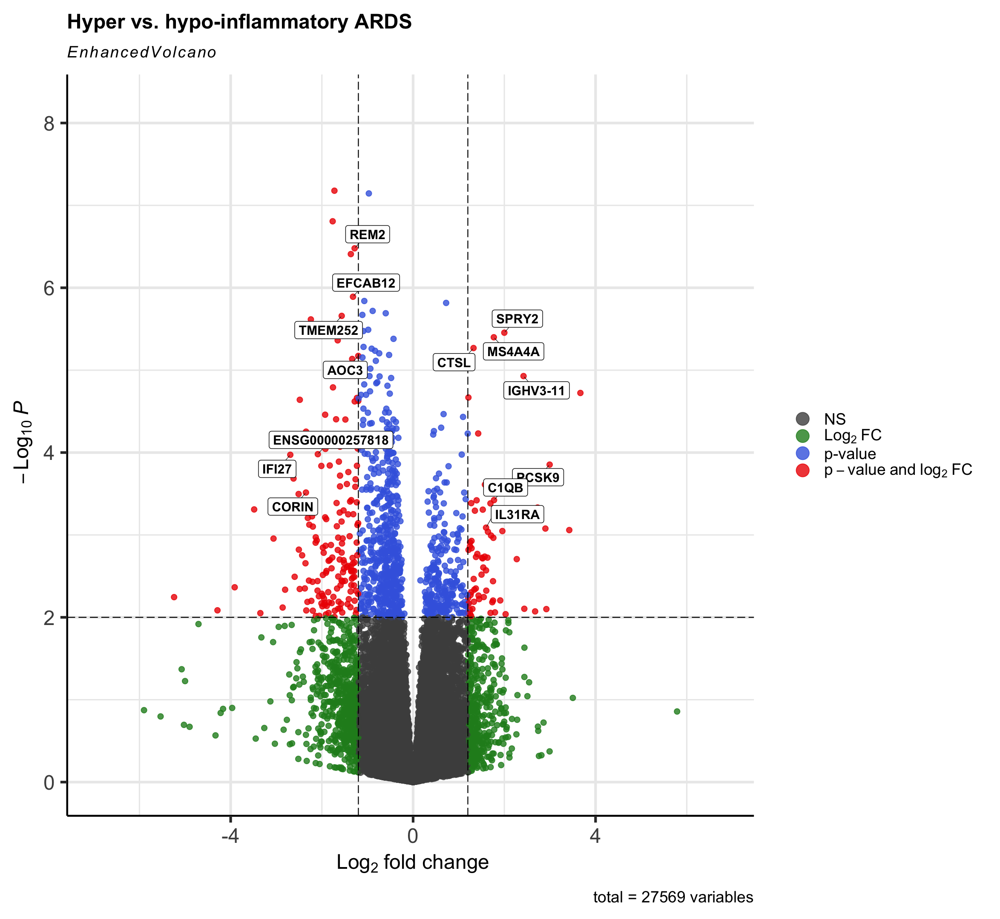
Functional enrichment
I performed functional enrichment of all significantly differentially expressed genes (adj P <0.1 and abs(Log2FC) > 1.2), against the background of all genes with > 10 nTPM.
First, over representation analysis using GO, KEGG, Reactome, WikiPathways, and the Human Protein Atlas. I used the grprofiler2 package, with ordered queires and a FDR <0.01.
Script - 05_functional_enrichment.R
GO Biological Process
Click to expand
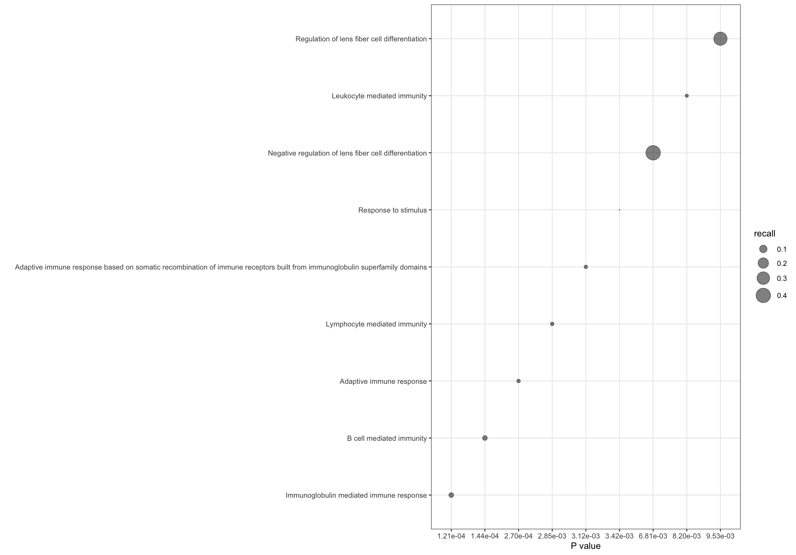
KEGG
Click to expand
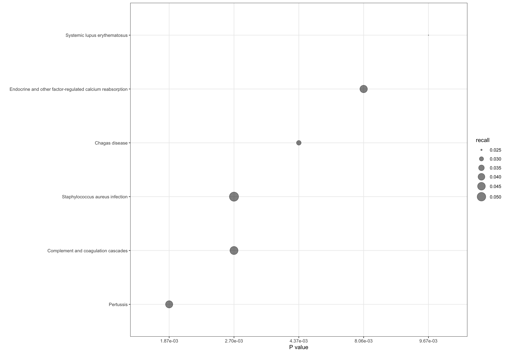
Reactome
Click to expand
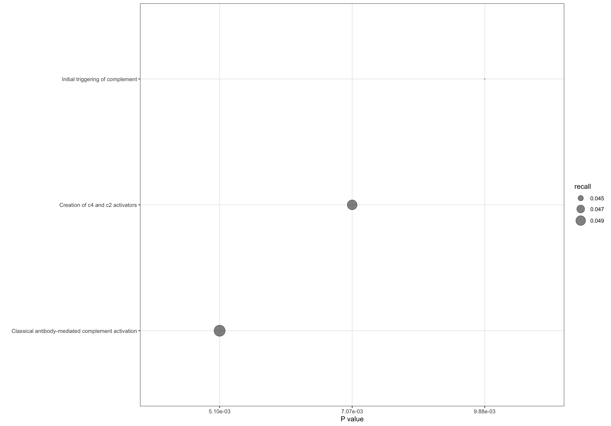
WikiPathways
Click to expand
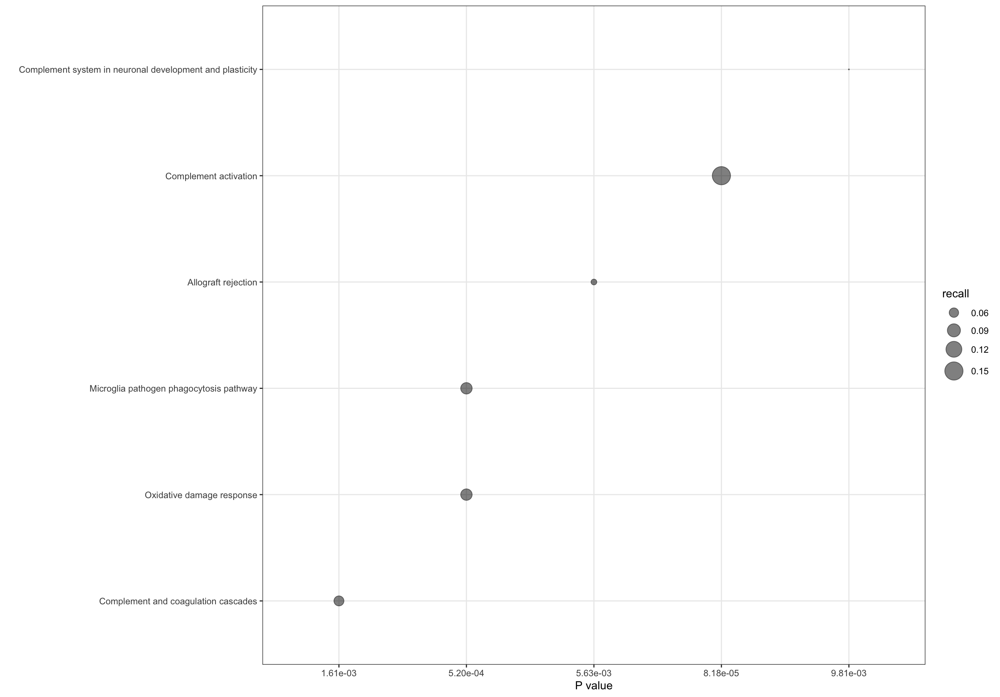
Human Protein Atlas
Nil
No significantly enriched pathways
Protein-protein interaction
I created a PPI network using STRINGdb and significantly differentially regulated genes (adj P <0.1 and abs(Log2FC) > 1.2). This mapped 59 proteins. There were 22 edges, giving an enrichment P value of 3.35e-05.
Script - 06_protein_protein_interaction.R
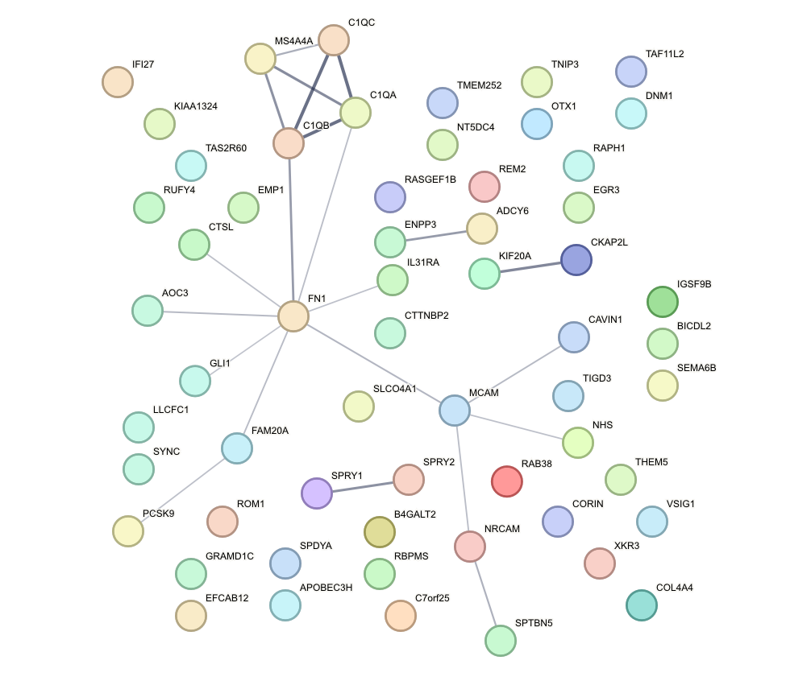
I then MCL clustered this network, identifying 8 clusters.
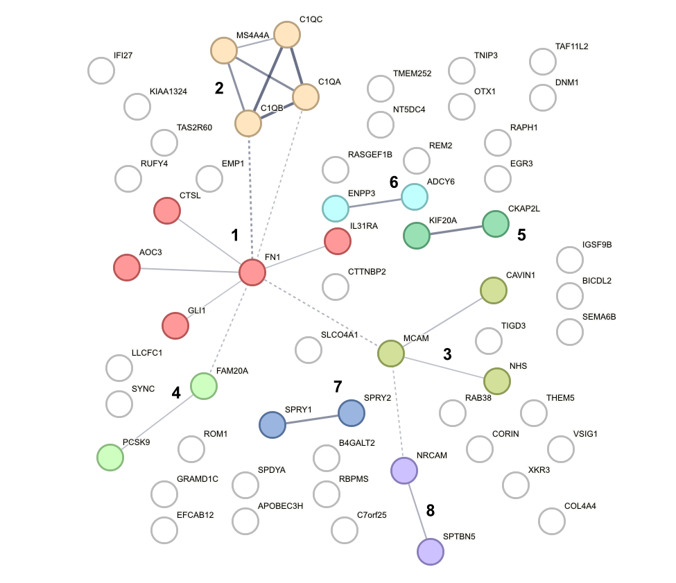
The following enrich against Reactome:
- Cluster 2 - Classical antibody-mediated complement activation
- Cluster 3 - RHOB/RHOC/RAC2 GTPase cycle
- Cluster 7 - EGFR downregulation
- Cluster 8 - Interaction between L1 and Ankyrins
Overlap with existing inflammatory subphenotype RNA-seq studies
Next, I considered the overlap between DEGs in PHIND with DEGs in two other RNA-seq studies:
- Sarma, A. et al. Hyperinflammatory ARDS is characterized by interferon-stimulated gene expression, t-cell activation, and an altered metatranscriptome in tracheal aspirates. bioRxiv (2022).
- Sinha, P et al. Molecular phenotypes of acute respiratory distress syndrome in the ROSE trial have differential outcomes and gene expression patterns that differ at baseline and longitudinally over time. Am. J. Respir. Crit. Care Med. 209(7):816-828 (2024).
Script - 07_gene_overlap.R
I retrieved hyper vs. hypoinflammatory DEGs from these studies based on the same criteria - adj P value <0.1 and abs(Log2FC) > 1.2.
Sarma
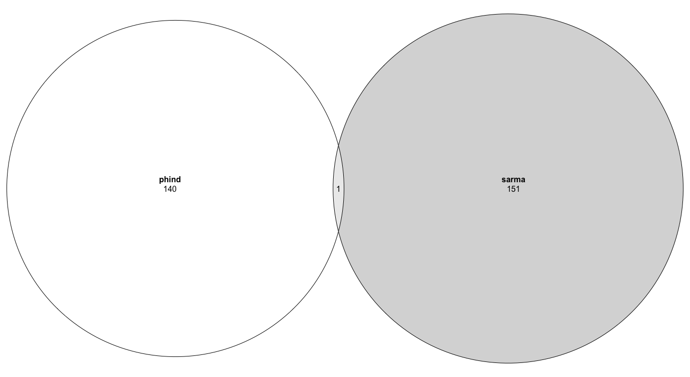
Sinha day 0
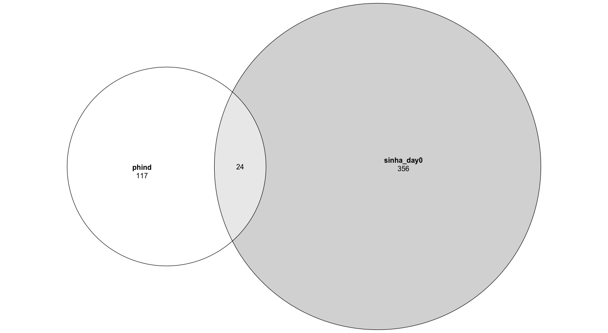
Sinha day 2
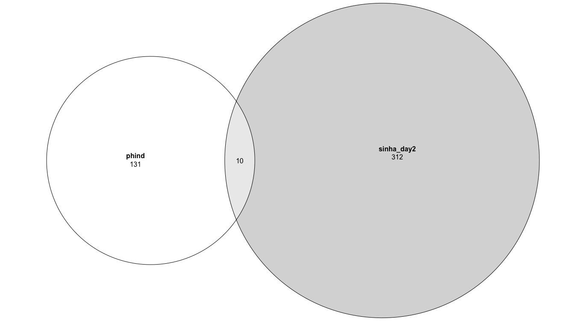
Clustering signatures based on gene embedding
Given the limited overlap between studies based on gene identity. I embedded the DEGs (gene signatures) from each study using pre-derived functional embeddings:
- Chehen, H. et al. Drug target prediction through deep learning functional representation of gene signatures. Nat. Commun. 15(1):1853 (2024). https://github.com/chenhcs/FRoGS
Embeddings - embeddings.csv
To create a background, I randomly partitioned the PHIND data using the same proportions of hyper and hypoinflammatory patients, and iterated DE analysis 1000 times. This returned 208 random gene signatures with ≥ 10 genes.
Script - compute_embeddings.py
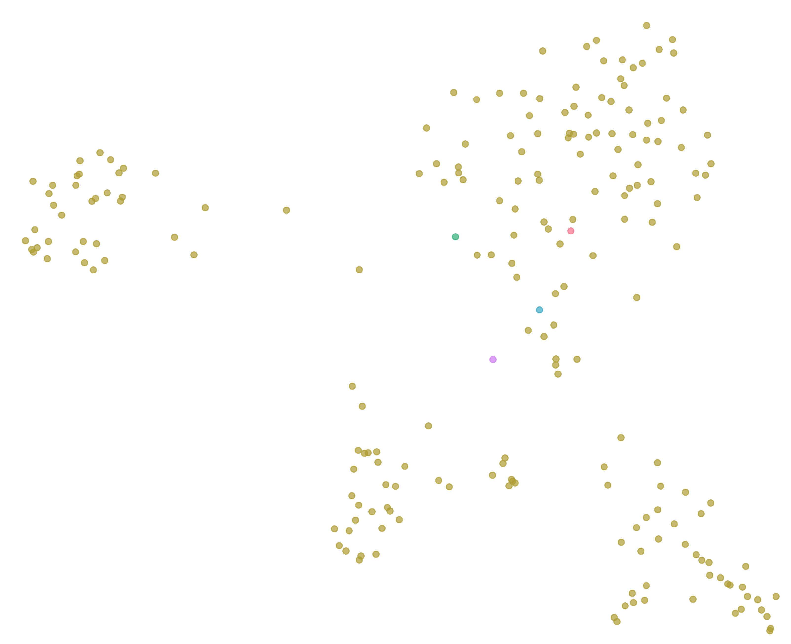
I then formally assessed whether the study derived signatures were more or less similar when compared to the background. I computed the pairwise Euclidean distance between all pairs of study signatures and from each study signature to each random signature.
I then performed paired t tests and Wilcoxon signed-rank tests - comparing the means of the within-study distances to the study-to-random distances.
- Paired t-test results: statistic = -4.52758, p-value = 0.00624
- Wilcoxon signed-rank test results: statistic = 0.0, p-value = 0.03125
The mean within-study distance was 0.28876 vs. 0.45015 from study to random signatures.
Script - embeddings_similarity.py
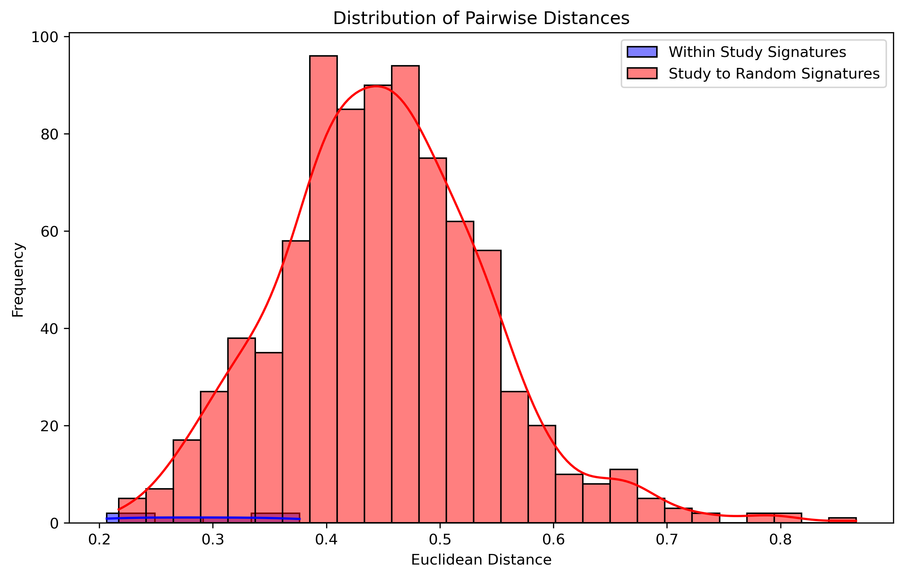
I also calculated an estimate of the effect size using Cohen’s d which was -2.89138, suggesting that the within study distances are smaller than study to random background and that the magnitude of this difference is substantial.
To defend against assumptions in the t test and Wilcoxon ranked-sign test, I also conducted a permutation test:
- Observed Difference: First, I calculated the actual difference between the mean of within-study distances and the mean of study-to-random distances. This is the observed difference.
- Combining Data: I then combined all the distances (both within-study and study-to-random) into a single pool of data.
- Permutation Process: I randomly shuffled this combined pool of data. After shuffling, we split the data back into two groups of the same sizes as our original groups. I calculated the difference in means between these new, randomly assigned groups. I repeated this 10,000 times.
- Comparison: For each permutation, I compared the randomly generated difference to the observed difference. I counted how many times the permuted difference is as extreme as or more extreme than our observed difference.
- P-value Calculation: The p-value is calculated as the proportion of permutations where the permuted difference was as extreme as or more extreme than the observed difference.
The P value was < 0.0001
Script - embeddings_cohensd_and_perm.py